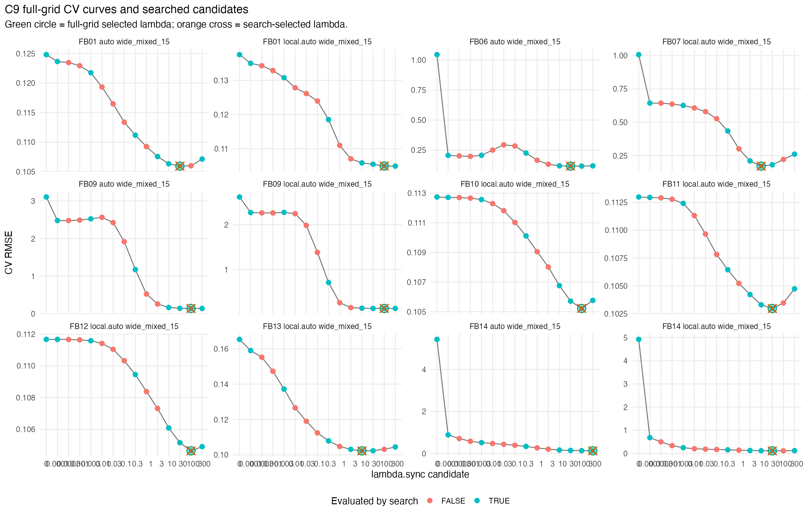
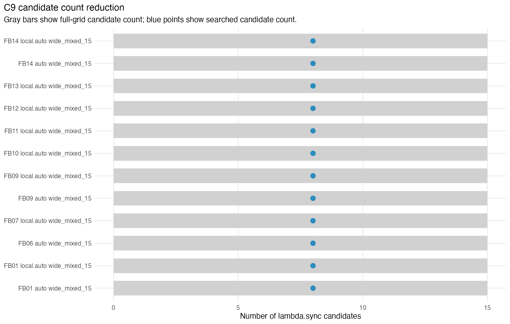
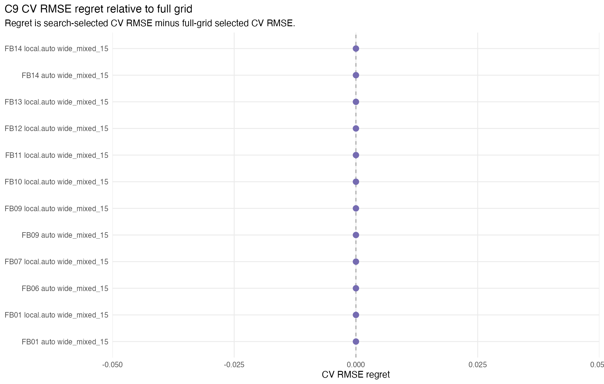

C9 evaluates the guarded coarse-to-refine lambda.sync search policy from C8 across a broader frozen first-batch suite. The deployable correctness guard is CV RMSE regret: the search-selected CV RMSE minus the full-grid selected CV RMSE. A practical tie rule selects the smallest lambda.sync whose CV RMSE is within 0.2% of the grid minimum.
Across the C9 validation cases, selected-lambda agreement was complete, maximum CV RMSE regret was 0, and candidate reduction was at least 46.667%. These broader validation results are still offline and script-local; they do not yet establish a package default.
| batch_id | dataset_id | chart_dim_rule | layout_id | full_candidate_count | search_candidate_count | candidate_reduction_pct | full_best_position | full_selected_lambda | search_selected_lambda | selected_agree | cv_rmse_regret | cv_rmse_relative_regret | full_total_elapsed_sec | search_total_elapsed_sec | elapsed_speedup |
|---|---|---|---|---|---|---|---|---|---|---|---|---|---|---|---|
| FB01 | LA-D1-RAW-N500 | auto | wide_mixed_15 | 15 | 8 | 46.667 | interior | 30 | 30 | TRUE | 0 | 0 | 2.569 | 1.484 | 1.7311 |
| FB01 | LA-D1-RAW-N500 | local.auto | wide_mixed_15 | 15 | 8 | 46.667 | right_boundary | 100 | 100 | TRUE | 0 | 0 | 2.487 | 1.559 | 1.5953 |
| FB06 | LA-D2-RAW-N500 | auto | wide_mixed_15 | 15 | 8 | 46.667 | interior | 30 | 30 | TRUE | 0 | 0 | 8.181 | 4.464 | 1.8327 |
| FB07 | LA-D2-HC-TOP1-N500 | local.auto | wide_mixed_15 | 15 | 8 | 46.667 | interior | 10 | 10 | TRUE | 0 | 0 | 10.062 | 5.659 | 1.7781 |
| FB09 | LA-13K-SUB-N500 | auto | wide_mixed_15 | 15 | 8 | 46.667 | interior | 100 | 100 | TRUE | 0 | 0 | 3.843 | 2.263 | 1.6982 |
| FB09 | LA-13K-SUB-N500 | local.auto | wide_mixed_15 | 15 | 8 | 46.667 | interior | 100 | 100 | TRUE | 0 | 0 | 3.794 | 2.232 | 1.6998 |
| FB10 | SYN-PARA-LINE-N500 | local.auto | wide_mixed_15 | 15 | 8 | 46.667 | interior | 100 | 100 | TRUE | 0 | 0 | 2.326 | 1.377 | 1.6892 |
| FB11 | SYN-SADDLE-LINE-N500 | local.auto | wide_mixed_15 | 15 | 8 | 46.667 | interior | 30 | 30 | TRUE | 0 | 0 | 2.316 | 1.353 | 1.7118 |
| FB12 | SYN-TWO-PLANES-N600 | local.auto | wide_mixed_15 | 15 | 8 | 46.667 | interior | 100 | 100 | TRUE | 0 | 0 | 2.957 | 1.768 | 1.6725 |
| FB13 | SYN-SIMPLEX-FACES-N600 | local.auto | wide_mixed_15 | 15 | 8 | 46.667 | interior | 10 | 10 | TRUE | 0 | 0 | 3.657 | 2.239 | 1.6333 |
| FB14 | SYN-RANK-BLOCKS-N600-P100 | auto | wide_mixed_15 | 15 | 8 | 46.667 | right_boundary | 300 | 300 | TRUE | 0 | 0 | 37.863 | 20.543 | 1.8431 |
| FB14 | SYN-RANK-BLOCKS-N600-P100 | local.auto | wide_mixed_15 | 15 | 8 | 46.667 | interior | 30 | 30 | TRUE | 0 | 0 | 29.843 | 16.67 | 1.7902 |

Each panel shows the full-grid CV curve. Search-evaluated candidates are highlighted. The green circle marks the full-grid tie-rule selection and the orange cross marks the search selection.

